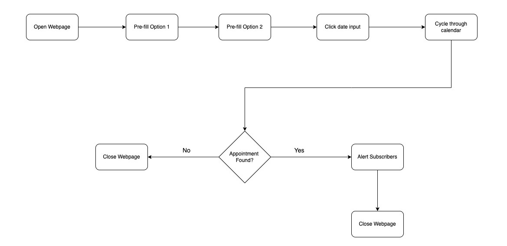

Writing an Appointment Checker
A few weeks ago, some family members needed to book appointments on a website concerning their identification. However, they couldn’t get a spot as it had been completely booked out for the year.
Their only hope was to wait for someone to cancel their appointment.
As such, they kept occasionally accessing the website in hopes that someone would cancel and they could swoop in. But, they were always disappointed as the odds of this happening were very low.
Regardless, I saw their actions as manual, repetitive, and undoubtedly automatable. Plus, if it could be automated, it would significantly increase the odds of securing an appointment.
So, in this rather long post, I discuss how I went about automating this checking process and areas where I believe my solution could be improved.
If you would like to check out the implementation, here is the link to the project GitHub repository: https://github.com/thaneshp/appointment-checker

Figure 1: High Level Implementation Diagram
Initial Outlook
Before thinking about the implementation, I firstly noted all the manual steps a person would use to navigate the site.
I even attempted to book an appointment several times and realised that there were fundamentally four steps to this process:
-
Click and select a preferred location from the 1st drop-down field.
-
Click and select the reason for your appointment from the 2nd field.
-
Click on the date input field for the date selector to appear.
-
Cycle through the calendar, checking for any available dates.

Figure 2: Target Website Layout.
To be able to translate this to an automatable solution, I needed to flesh out the entire process from start to end. This meant accounting for opening/closing of the browser and alerting users of an available slot.

Figure 3: Appointment Checking Flowchart
Implementation Overview
At this point, I had a good idea of the process, but I wasn’t clear on how to implement it just yet.
I searched for tools/technologies that could help with this and found a combination that would suit my needs perfectly; Python and Selenium.
In the following sub-sections, I discuss how these tools, among others, helped form my solution.
Interacting with HTML Elements
The first thing I had to overcome was wrapping my head around interacting with HTML elements via Python.
I knew Selenium was designed to do this, but I didn’t understand precisely how.
After further research, however, I realised you could interact with elements by simply referencing their id, tag, class, XPath and more.
For example, to select and pre-fill the input fields, I referenced the id field, as shown below.
location_field = driver.find_element_by_id(FIRST_SELECT_ELEMENT_ID)
Select(location_field).select_by_value(FIRST_SELECT_ELEMENT_VALUE)
To aid me with using this library, I downloaded the SelectorsHub - XPath Plugin on Google Chrome which indicates how to target specific elements using Selenium.
Determining an Available Date
Now that I could interact with the elements, I needed to figure out how to search for an available date.
In particular, I was dealing with the question, “What makes a date available?”
Upon interacting with the website, I realised that a date is available when it can be clicked on.
But, what did this look like in HTML?
By using inspect element, I discovered that an available date has an a tag, while an unavailable one has a span tag.
Now it was simply a matter of iterating through the calendar and checking which tag the date element has.
Alerting Subscribers
After finding a date, the script must notify subscribers to take action.
To do this, I initially added email handling, using the smtplib module to send notifications via my personal Gmail account. This worked, but it wasn’t ideal, as subscribers would often miss the email and, therefore, the opportunity to take action.
Due to this, I added a second form of notification, where subscribers would be more likely to react in time; SMS. I did this by signing up for a free trial of Twilio and adding the module into my script. The whole process was straightforward.
Implementing SMS notifications significantly increased user response times, as they were far more likely to see the message.
Automating Script Execution
Now that the script was complete, I had to run it automatically and continuously.
Since I had a PC lying around at home, I decided to set up VMware Workstation and run it from there. I deployed an Ubuntu VM on VMware and used crontab to run the script every minute, logging the output to a .txt file.
At this point, it was time to sit back and wait…
Areas of Improvement
This script is by no means a perfect solution, but it helped all subscribers secure their desired appointments within one week.
Despite its success rate, there are areas where it can be improved.
1. Efficient Date Checking
Currently, the script checks every date listed in a calendar year, including the days they’re closed, e.g. weekends and public holidays.
To make the program slightly more efficient, we could add a condition to skip all the permanently unavailable dates.
However, I don’t believe the milliseconds saved would add much value to the subscribers.
2. Find all Available Dates
Additionally, the script will stop running after locating the first available date. This means that more than one date could be available, but the program only reports on the first one.
As such, the script could be extended to traverse the entire calendar, every time, notifying subscribers of every available date. This would give users more options to select from when booking a date.
3. Book the Appointment
Finally, I believe it would be most helpful if the script could book an appointment for the subscriber. This means after finding an available date, the program selects a timeslot and enters the subscriber’s information for them.
Basically, after the subscriber has secured an appointment, they would get removed from the list, and the program proceeds with the queue. Doing this would eliminate the need for human input, further guaranteeing subscribers an appointment.
However, we would have to gather personal information from subscribers, which they may not feel comfortable giving out. As such, I don’t think this would be a practical addition; unless you knew all the users personally.
Conclusion
After I finished writing the script and began running it, no alerts came through for hours. I started to question where I went wrong.
I asked myself: Had the website blocked my IP? Was the script timing out? Had nobody cancelled their appointments?
No, it was none of this, just my lack of patience. Given time, the alerts started to roll in, and the subscribers began securing their appointments, one by one.
Within one week, everyone had bookings they were pleased with. And, ultimately, this is the only thing that matters.